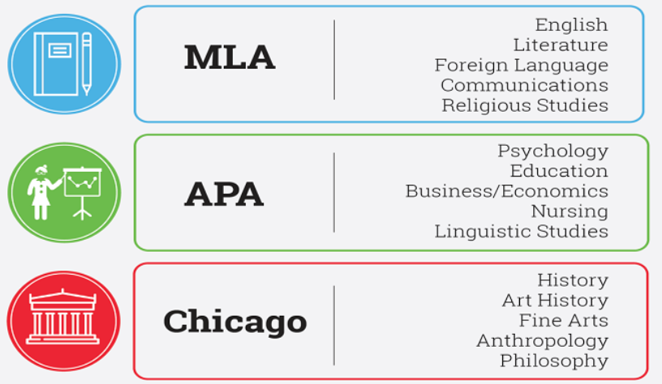

By: Emma Andrews
October 14, 2022

Start by always taking good notes. Make sure they are organized in a way that makes sense to you so you can reference them later. You can either hand-write them in a notebook, or use a device, but be sure to keep them all in one place. Color coding can help with organization as well.
We’ve all waited until the last minute to study for a big exam, but cramming won't help you learn properly. It’s important to start early so you can take breaks in between. One effective method is the Pomodoro Technique. To do this, first break your work into sections. Then, sit down and study each section for 25 minutes. After this, take a 10 minute break. Repeat until you feel confident in your knowledge!
Studying with other people can be a big help. You might learn things from them that end up helping you remember more content. You can quiz each other and help each other stay on task. Get to know a few students in your class so you can set a study session. This can make studying more fun, so it doesn't seem like work.
By: Emma Andrews
October 14, 2022
APA stands for American Psychological Association. It is used in the social sciences field. Some examples are sociology, psychology, nursing, criminal justice, and education. Cover pages and abstracts are often a requirement. When using APA, try to avoid quotations, instead paraphrase from your source. Current research is favored so make sure the dates are in both your reference list and your in-text citations. Only the author's first initial is included, as the content is more important than researchers.
MLA stands for Modern Language Association. MLA is used in the humanities field. Examples include philosophy, communications, religious studies, and english. Cover pages and abstracts are not a requirement. Direct quotes, however, are important, so make sure to use the author’s exact words with proper citation. Page numbers are also often used with MLA in-text citations. This is to ensure readers can easily find the sources you use. The author’s name is emphasized in MLA, so make sure to include their full name in the reference list.
Lastly, there is Chicago, also known as CMS, or Chicago Manual of Style. This is most often used in the field of history, fine arts, and anthropology. Title pages can be included, but are not required. The two types of citations you would use this for are author and date, and notes and bibliography.